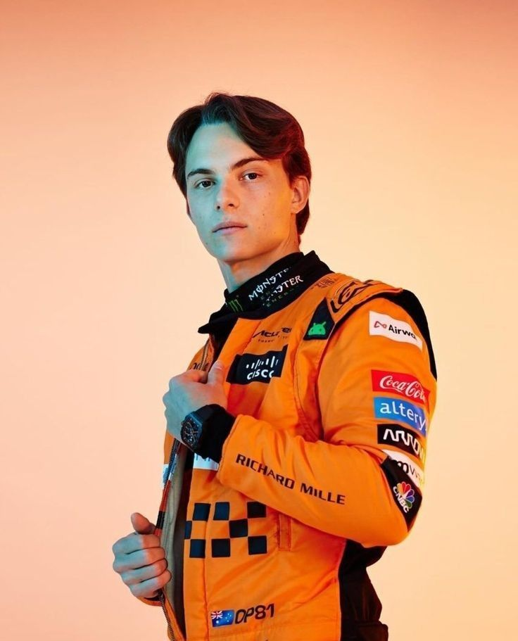

<html lang="en"></html>
<head>
    <meta charset="UTF-8">
    <meta name="viewport" content="width=device-width, initial-scale=1.0">
    <title>RESULT</title>
</head>
<body>
    
</body>
</html>
<html lang ="en"></html>
<head>
    <link rel="stylesheet" href="result.css">
</head>
<body>

    <h3><br>RESULTS<br></h3>

<article>
  <section class="Lewis">
    <br>
    <c><br><br><br>Lewis Hamilton</c>
       <p><br>Circuit: Circuit de Spa-Francorchamps <br> When: July 28, 2024
       <p><br>Lewis Hamilton clinched victory at the 2024 Belgian Grand Prix, held at the iconic Spa-Francorchamps circuit, after initially finishing in second place. He moved up from third on the grid to take the lead on lap 3, overtaking Charles Leclerc. Although George Russell crossed the finish line first, he was later disqualified for having an underweight car, which promoted Hamilton to the top spot. <br><br> Lewis Hamilton won the 2024 Belgian Grand Prix at Spa-Francorchamps after George Russell, who originally crossed the line first, was disqualified due to a weight violation. Starting from third, Hamilton quickly moved up to second place and then took the lead by overtaking Charles Leclerc on lap 3. The race saw Hamilton implementing a two-stop strategy, while Russell opted for a one-stop, leading to a tense finish. Hamilton's victory marked his 105th career win in F1.
        Catch up on all the key moments from the Belgian Grand Prix; a race filled with big strategy calls and a thrilling late-race chase👉<a href="https://youtu.be/pQaG0ay957M?si=BZnO2PrE7RbkRiN9"> Race Highlights | 2024 Belgian Grand Prix</a></p>
    
 <section class="Lando">
            <br><br><br>
            <d><br><br>Lando Norris</d>
               <p><br>Circuit: Zandvoort <br> When: August 25, 2024
               <p><br>Lando Norris triumphed in the 2024 Dutch Grand Prix at Zandvoort, marking his second career victory in Formula 1. Despite a slow start that saw him drop to second place behind Max Verstappen, Norris exhibited impressive patience and strategy. He regained the lead on lap 18 and maintained a commanding pace throughout the race, ultimately finishing 22.8 seconds ahead of Verstappen​.Norris has achieved numerous podium finishes and race victories throughout his career, and he is considered one of the rising stars of Formula 1. While he hasn't clinched the championship title yet, his strong performances and the competitive nature of the McLaren team suggest that he has a good chance of achieving success in the future.
                <br><br><br> Watch all the best bits from Zandvoort as Lando Norris scores a second career win to end Max Verstappen's home dominance, and the likes of Carlos Sainz and Lewis Hamilton storm through the field.👉<a href=" https://youtu.be/cFM_6zb35rI?si=iXxGwtsMWtSiRVBH"> Race Highlights | 2024 Dutch Grand Prix</a></p>
  
 <section class="Leklek">
                    <br><br><br>
                    <d><br><br>Charles Leclerc</d>
                       <p> <br><br> Circuit: Monza Circuit <br> When: September 1, 2024
                       <p><br>Charles Leclerc secured a thrilling victory at the 2024 Italian Grand Prix in Monza, marking Ferrari's first home win since 2019. Starting from fourth on the grid, Leclerc quickly moved to second place on the opening lap, capitalizing on a mistake from George Russell. The key to his success was a well-executed one-stop strategy, allowing him to maintain a strong pace and fend off challenges from McLaren's Oscar Piastri, who finished second.  Leclerc remains a highly regarded driver with a bright future. His talent and dedication make him a strong contender for future World Championships.
                        <br><br><br> Watch all the best moments from an unforgettable Italian Grand Prix. Drama unfolds at the race start with Oscar Piastri's bold move on team mate and pole-sitter Lando Norris, but it's Charles Leclerc who wins Ferrari's home race to send the Tifosi into a frenzy.👉<a href=" https://youtu.be/sTmpbEYUba0?si=dfUwK7hvqMHZyviK"> Race Highlights | 2024 Italian Grand Prix</a></p>

 <section class="Oscar">
                            <br><br><br>
                            <d><br>Oscar Piastri</d>
                               <p> <br> Circuit: Baku Circuit <br> When: September 15, 2024
                               <p>Oscar Piastri won the 2024 Azerbaijan Grand Prix, securing his second career victory. After starting in P2, Piastri made a critical move on Charles Leclerc on lap 20 to take the lead. Despite pressure from Leclerc, he maintained his position and finished 10.9 seconds ahead.
                                <br><br> Catch the key moments from an instant classic on the streets of Baku! Featuring a tight battle for P1 throughout, fights up and down the field and a dramatic crash ending for two podium contenders.👉<a href=" https://youtu.be/7ynDOY1PR74?si=u1v3L9aftH_0uvsn"> Race Highlights | 2024 Azerbaijan Grand Prix</a></p>